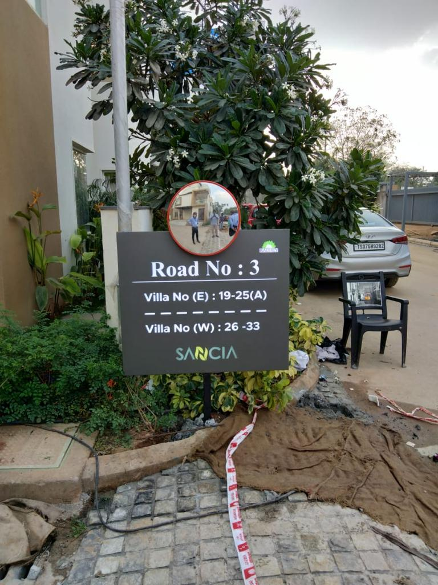
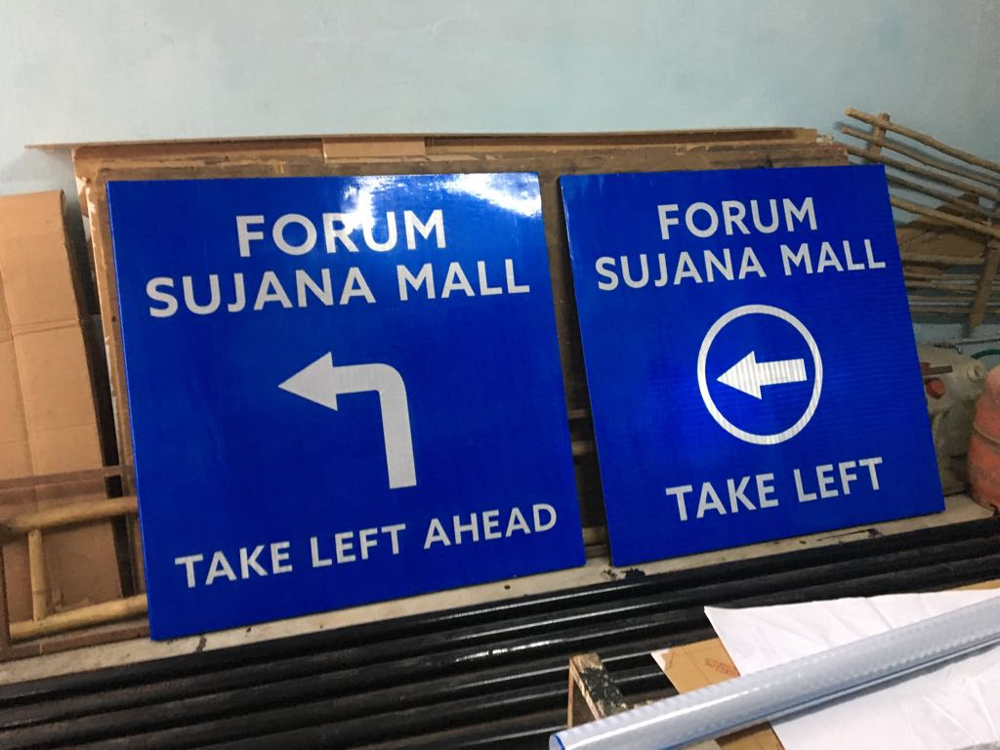
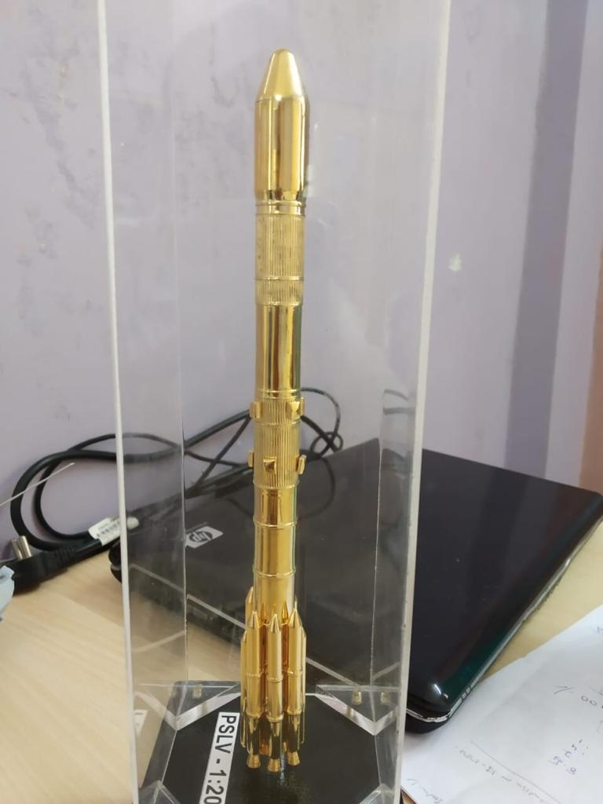
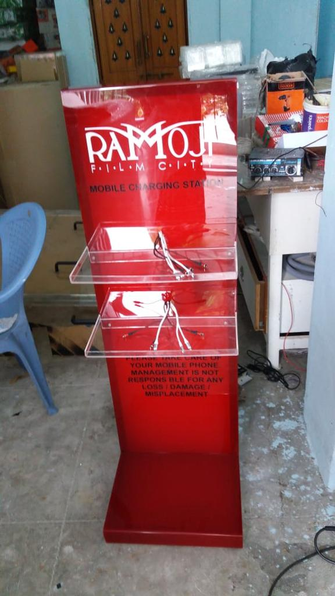
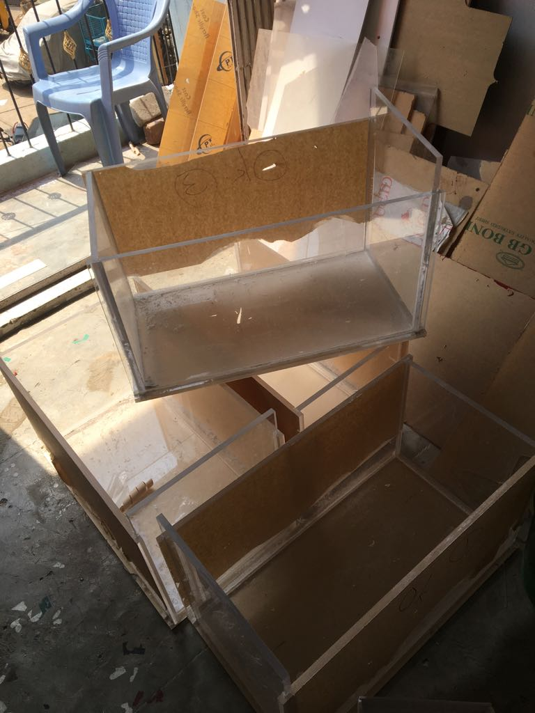
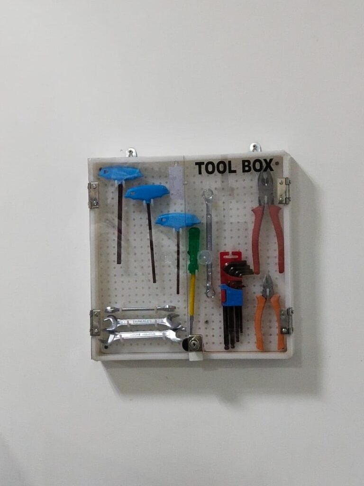

OUR SERVICE
Services
Outdoor Signs
Indoor Signs
Acrylic Fabrication
OUTDOOR SIGNS
In the consumer and retail store business, many customers make purchase decisions and judgements based on first impressions. Shopfronts, building facades and store entrances are all designed to entice prospective clients to walk in. And the primary component of your storefront is the shop’s signboard. In addition to showcasing your company’s name and brand, this signboard has to be so attractive, that it should literally stop people in their tracks.
1. ACRYLIC LED SIGNS
Acrylic LED Sign is the most commonly used LED Signboard. This Signage is a basic LED sign with three-dimensional Acrylic letters fixed on top of ACP/MS base.
2. ALUMINUM CHANNEL LETTERS
Channel letters are custom-made metal letters which are similar to acrylic letters. They are often internally illuminated and are shaped with powder coated aluminum trim cap sections on a high precision bending machine that makes the sides of the 3D letters opaque. The Aluminum letters signs are a beautiful way to illuminate business. The combination of aluminum letters and acrylic façade together gives a classic sophisticated look. They are ideal for corporate offices and retail stores.

3. LIQUID ACRYLIC LETTERS
Liquid acrylic is the latest and futuristic in LED sign technology. The liquid acrylic letter is water-resistant and made of durable material that can be customized as per the needs of the customer. It is almost gives double the brightness and is resilient than its predecessor. It’s brilliant in quality and comes in economical price.
4. OPEN LED LETTERS
In an Open LED sign board, the LEDs are fixed on the surface to the acrylic board which are exposed to the naked eyes. The glow of the open LED board is extremely bright and conspicuous. A few business owners choose Open LED boards to attract the customer and be distinct from others.

5. SKY/HEAVY STRUCTURAL SIGNAGES
Sky/heavy structural signs are generally very large and visible from very far distances. Particular care is taken to fabricate them from extremely robust material to strong winds and harsh weather conditions. These signs serve as markers to identify buildings. And as such they are mainly installed at very high locations on multi-storey buildings. Mostly these Signages are made of material like Aluminum as they are lightweighted metal and rigid enough to sustain harsh environment.
7. PYLON SIGNS
Pylon signs are freestanding signs that may be one-side or double-sided, and are comprised of steel or aluminium. The facia is usually made of acrylic and can be either rigid or flexible. Because of its sheer height, pylon signs can be seen from a great distance, making them a wonderful advertisement for your business and a great tool for grabbing peoples’ attention.
8. TOTEM SIGNS
Totem signs are large freestanding structures designed to deliver a highly visible identity in conjunction with directional way finding information. Totem signage is made with monolithic structures with pleasant design particularly suitable for communicating identity and image or first stage of flow direction. The paneling can be made in a single piece or subdivided into separate modules. They are smaller and thinner unlike pylon signs. They are used near the buildings to direct visitors leading to the entrance.

9. DIRECTIONAL SIGNAGE / WAYFINDING
In a fast-paced world people need to know exactly where they’re going with no confusion and your outdoor directional sign is exactly what you need to grab their attention. Way finding and directional signage has become an increasingly important element of creating positive visitor and customer experiences. They form the first impression of your business. Way finding systems can be identified in almost any business, helping people navigate buildings and office spaces while Directional signage help in navigating external areas.
- 
- 
10. GLASS ELEVATION BRANDING
Large corporate offices, malls, dealerships, and even retail stores tend to use glass significantly these days. It provide a great creative asset to showcase your offerings/identity. They convert simple walls of glass into usable spaces to communicate with the visitors and audience. That’s unarguably a great real estate vertical when it comes to displaying your brand.
INDOOR SIGNS
Indoor signs are as much a part of your business branding as they are a part of the building décor. Whether you are looking to provide directional assistance to clients and visitors, or putting your brand’s logo on display for a dramatic first impression, custom interior signs provide a versatile solution for both. These signs improve your branding, enhance your customer service. These signs assist customers, clients, and guests as they make their way through your establishment. They let the customers know about the special features of your products and persuade them to make a purchase. Indoor signs are found in larger establishments such as shopping centres, hotels, and grocery stores.
1. RECEPTION SIGNS
Indoor signs featuring your company’s name, logo, signature colors or slogan can create a strong brand image that sticks in your customers’ minds long after they leave your business. Branding signs can be made out of any material you want to best represent your brand. Corporate offices and workplaces of big brands are awe inspiring. These environments speak volumes about a company’s professional outlook and culture. Common design sense states that the entrance or reception area of a workplace makes the first impression on a visitor, be it a client, an interviewee, or an everyday employee. And the one thing that every reception must-have is the brand name or logo of the company.

2. NEON SIGNS
Neon LED signs are phenomenal attention grabbers. They have always been in great demand in places likebars, lounges, restaurants, fashion salons, events, etc., where you want to give a high energy, youthful look.A very specific type of LED acrylic signs are the neon signs.


3. WALL GRAPHICS
Empty walls are boring to look at. Wall graphics are a great form of signage display and one of the most visible spaces in any office. Architects look at these visible bare spaces in any office as a resource for corporate branding and personalized interior décor. Thus, wall graphics are a great way to display important information, add branding, or personalize your walls. They create a memorable experience and reinforce your brand. They are completely customized and can be removable or permanent. They are also durable and economical.
4. INFORMATORY SIGNS
Highly attractive name board solution to display the name of all your employees in the company. Individual name plates in this signage can be updated. What visitors to your office see, is a shiny sheet of glass, floating a slight distance from the wall, holding your poster print. And so, a shiny acrylic sandwich panel will look significantly more classy.Metal engraved nameplates are also called gold /silver engraved nameplates, owing to the metallic sheen they possess. With text and logos etched on their surface, they look jaw-droppingly beautiful and will easily enhance your office interiors.
5. INDOOR DIRECTION/WAYFINDERS
Indoor Directional signs otherwise known as way finding signage, shows people how to navigate spaces inside a building. Since directional signs have a great deal of functional value, a variety of organizations use them, and you probably encounter many of them as you go about your day-to-day life. Printed on various base substrates, directional signage is highly customizable and configurable to your needs
ACRYLIC FABRICATION
Acrylic fabrication involves all the methods that are used to create desirable shapes and structures out of unprocessed acrylic. Acrylic sheets are cut according to requirements using acrylic-cutting blades, plastic cutter, saber saws, table saws or routers. Pioneer Enterprises offers custom acrylic fabricating for industrial applications. Our staff works with each client from initial inquiry through the delivery of the finished part to ensure that your part meets or exceed your application requirements. We specialize in fabricating acrylic, shatter-proof thermoplastic. Acrylic’s properties include high machinability, good thermal properties for a broad range of temperatures, and the distortion-free light transmission. Also commonly known as Plexiglass®, it is a cost-effective substitute for glass and heavier plastics.
1. ACRYLIC DISPLAY UNITS
Acrylic Displays are a smart choice for displaying everything from cosmetics and fashion accessories to vape products or anything in between. Our acrylic displays are clear acrylic plastic that provide excellent see-through capability. They are used in Home, Offices, Schools, Colleges, Institutes, Hospitals, Industries, etc. Often, labels are included with the displayed objects, providing information such as description or prices.
- 

2. ACRYLIC FURNITURE
Pioneers are a prominent manufacturer and supplier of highly attractive acrylic furniture. We offer Acrylic Customized Podiums, Tables etc., manufactured in adherence to the industry set standards. We use advanced machinery and innovative technology in the manufacturing of these products. These products are appreciated among clients for their smooth finish, elegant design and dimensional accuracy and reliability. The optimum quality of these stands is maintained through rigorous quality assurance checks conducted by our team of quality controllers.
3. ACRYLIC DROP BOX
We are a leading Manufacturer of acrylic customized box. Our organization excels in the domain of manufacturing and supplying an assorted range of Acrylic Boxes. Acrylic boxes are a combination of elegance & Utility. Boxes are also customized & our team helps you arrive at the right solution. Pioneers are engaged in the business of manufacturing and trading of Acrylic Custom Box that has fetched high demands in the market. We excel in manufacturing and supplying assorted range of Acrylic boxes that are highly durable in its characteristics. Our team customizes the boxes and helps you arrive at the right solution. Acrylic boxes are ideal solutions for your suggestion, donations, election, voting, raffle, and customer service needs. We are offering Clear Acrylic Drum to our valuable customers. These drums are manufactured using cutting-edge machinery. Acrylic clear drum is great for giveaways, tricky-trays, grand prize events and more! A lockable door (with provided keys) sits on one end of the middle part of the drum and can open and close via hinge – use this area to reach inside to select your winners and to empty the unit. On the other side, is the area where users can drop tickets, votes, or whatever else you have planned. This slot has a built in sliding door to keep the contents inside when you spin the drum to commence the raffle. The base features four rubber feet to keep the unit in place as you spin.
4. MOBILE CHARGING UNIT
Mobile charging stations are a great way to clean up the mess of cables. It is a designated place for charging a mobile device. These units are widely used in shopping complexes, airports, railway stations and hospitals. We at Pioneer Enterprises can customize Mobile Charging station in Combination of Acrylic and metal structure Lit/ Non-Lit. These are one of the best service-oriented Advertising tools.
- 
5. PHARMACEUTICAL NEEDS
With the support of talented professionals, we are passionately engaged in offering high quality Pharmaceutical Acrylic products. These products are widely used in pharmaceutical industries. The provided products are designed using quality tested material with the help of contemporary techniques in accordance with predefined industry norms. Machine Guards, Safety Covers, Machine Covers, Tanks, Tool boxes, Test tube stands, View Glass, Tablet inspection Tray, Column Holder, Friability test Acrylic Drum & Trays, Weighing Acrylic Box and many more customized products.

- 
- 